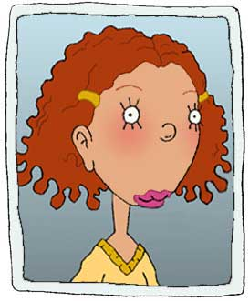

|
 |
Ginger Fautley Wants desperately to be noticed, but doesn't like being looked at.
Ginger is both repulsed and obsessed with the social structure that dictates her life at Lucky Junior High.
Ginger has always secretly wished for a shot at total and extreme popularity.
But when her prayers are answered, she finds herself paralyzed with uncertainty.
In Dodie's bedroom, Ginger fumed about the injustice of the system, vowing that if she ever made it to "the big time" she would stir things up.
But it may take Ginger a while to find the confidence to do that.
For now, she's just concentrating on coming up with a suitable answer for "W'ssup?"
|